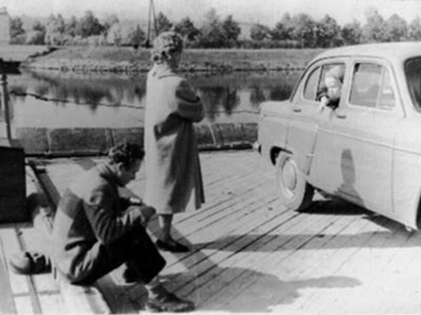

Что вышло из великих планов
-
750 тысяч жили отдельно от 280 миллионовОбщество равныхЖизнь номенклатуры
-
«Лоскутное одеяло» ценой в 20 миллиардов рублейСеть, которая соединит предприятия, региональные центры и МосквуОГАС, советский интернет
-
СССР едва не утонул в початкахНакормить скот, а значит, дать больше молока и мясаКукурузная эпопея
-
За всё бесплатное платил сам гражданинКвартира, медицина и вуз бесплатно3 мифа о бесплатном СССР
Лето. Послеобеденная жара. Мне двенадцать лет.
Залив Икшанского водохранилища. Сидим с пацанами на ржавом понтоне, закинули удочки. Час сидим. Клёва нет, и это мягко сказано.
Тут здоровенный скоростной катер. Волна такая, что мало не показалось. Лески перепутались, понтон залило водой. Катер разворачивается и снова нас окатывает. В катере сидит абсолютно лысый тип.
Серёжка не выдержал. Вскочил и заорал во всю глотку:
- Скотина лысая!
Катер сбавляет ход. Разворачивается. Идёт прямо к нам. Убежать хочется, но удочки жалко. Катер швартуется, и из него выходит Никита Сергеевич Хрущёв. Он улыбается и спрашивает по-простому:
- Как клёв?
Читать, чем кончилось
Соседи по посёлку «Лётчик-испытатель»
Реальных испытателей там было меньше половины. Что видел сам, так и пишу. Что знаю с чужих слов, тоже помечаю.
- Константин АрцеуловСосед по даче, внук Айвазовского, первым вывел самолёт из штопора. Ни разу не видел его рассерженным.
- Алексей ПьецухОбложил бутылочной данью весь посёлок и построил дом из бутылок по 12 копеек. «Да это разве жизнь, одни удовольствия».
- Алексей ЛеоновДом на склоне бывшего карьера и в нём галерея космических картин.
- Андриян НиколаевПредседатель правления посёлка. Кого ещё ставить во главе, лётчика-космонавта или профессора?
- Александр ГоловановШестидесятилетие маршала: весь день над посёлком летают самолёты, с вертолётов на парашютах сбрасывают подарки.
- Святослав ФёдоровОфтальмолог СССР №1, для посёлка просто «дядя Слава».
- Семейство АджубеевКупили здесь дачу. С внуками Хрущёва не дружил, но приятельствовал.
Все статьи
- Рок-клубы 80-х: 4 города, где на самом деле зарождался русский рок
- Георгий Жжёнов: 17 лет лагерей, большая сцена и 90 прожитых лет
- Пионерия: 3 детских страха, о которых молчали учителя и родители
- 128 народов СССР: как общая жизнь соседствовала с депортациями и межнациональными спорами
- Алексей Леонов: 12 минут в открытом космосе и дом на краю карьера
- Дворовое детство в СССР: 7 забав, для которых не нужны были гаджеты
- Полочное кино СССР: 15 фильмов, которые запрещали, прятали и возвращали зрителям
- Святослав Фёдоров: 10 достижений офтальмолога СССР №1
- Книжный дефицит в СССР: 21 автор, которых доставали через связи и макулатуру
- Взлёт и опала: за 3,5 года от пилота до Главного маршала - почему Сталин сломал Голованова?
- Виноделие и самогоноварение в СССР: 2 разные культуры за одним столом
- Космонавт Андриян Николаев: 18 суток в космосе и много лет одиночества
- Джинсы в СССР: 5 тайных маршрутов к заветной паре, от бартера до фарцы
- Квартира, медицина, вуз: 3 мифа о бесплатном СССР и суровая правда
- Гигантские советские ЭВМ: 3 причины, почему М-1 и Сетунь остались в тени
- Без 5 минут министр иностранных дел СССР: судьба семейства Аджубеев
- Советский Новый год: как оливье и «Ирония судьбы» стали его неотъемлемой частью
- Святослав Фёдоров: 2 версии гибели офтальмолога СССР №1
- Очереди в СССР: 7 негласных законов, которые знал каждый
- Офтальмолог СССР №1: как Фёдорову жилось в нашем посёлке
- Офтальмолог СССР №1: как «дядя Слава Фёдоров» стал прекрасным наездником
- «Кукурузная эпопея»: 7 причин, почему СССР едва не утонул в початках
- Советский анекдот: 5 случаев, когда народ смеялся над тем, о чём нельзя было говорить
- «Современник» и Таганка: 9 театров, где очереди за билетами не кончались
- ПАИ-69, мотоцикл «Ява» и бутылочный дом: судьба Алексея Пьецуха
- 60 минут под нож: что Госкино не понравилось в легендарном фильме «Москва слезам не верит»
- ОГАС: как амбициозный советский интернет ценой в 20 миллиардов рублей стал «лоскутным одеялом»
- 0 наград СССР и мировой триумф: как внук Айвазовского расплатился за своё бесконечное небо
- Ножницы для сказки: 7 советских мультфильмов, где цензура вырезала даже смех
- От «13-ти» до Сталкера: история голливудского плагиата
- Ателье, дома быта и «муж на час»: как 280 миллионов в СССР ремонтировали свою жизнь
- Реальные зарплаты в СССР: что скрывали цифры с 60-х по 80-е
- «Заложники образа»: как одна роль сажает актёра в клетку
- Жизнь номенклатуры: 7 вещей, которые отделяли 750 тысяч от 280 миллионов
- Что вырезали из «Бриллиантовой руки»: 27 правок цензуры
- Как я Никиту Хрущёва впервые повстречал
- Как Высоцкий чуть не потерял роль Жеглова
Как поддержать канал
Подписаться на ДзенеПоставьте реакцию
Под статьёй, которая зацепила. Или разозлила, это тоже считается.
Расскажите свою историю
А у вас в семье есть истории о случайных встречах с известными людьми? Делитесь в комментариях, интересно послушать.
Перешлите тому, кто это помнит
Или тому, кто спорит, что всё было иначе.